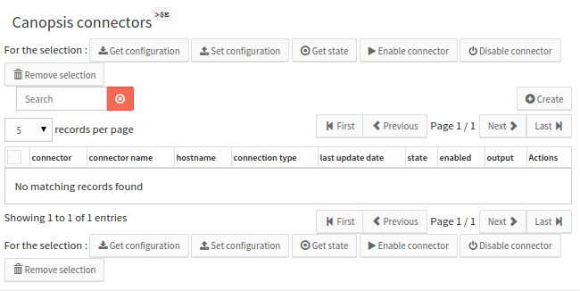
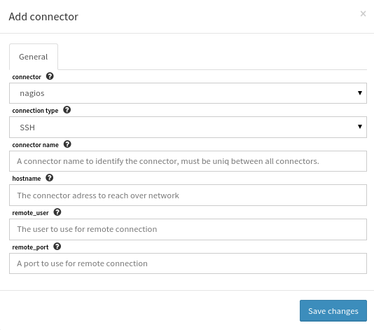
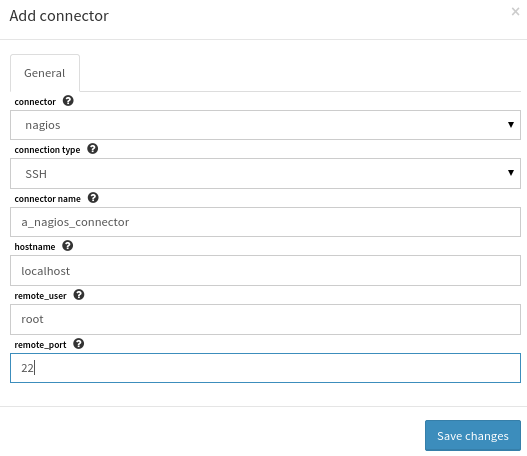
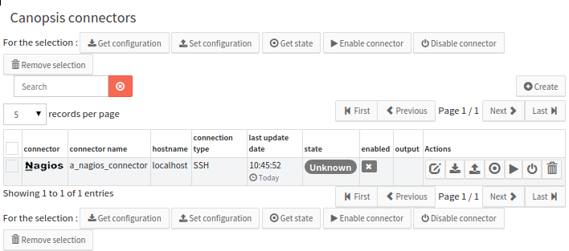
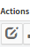
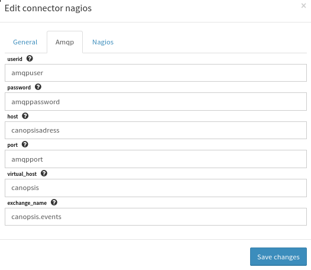
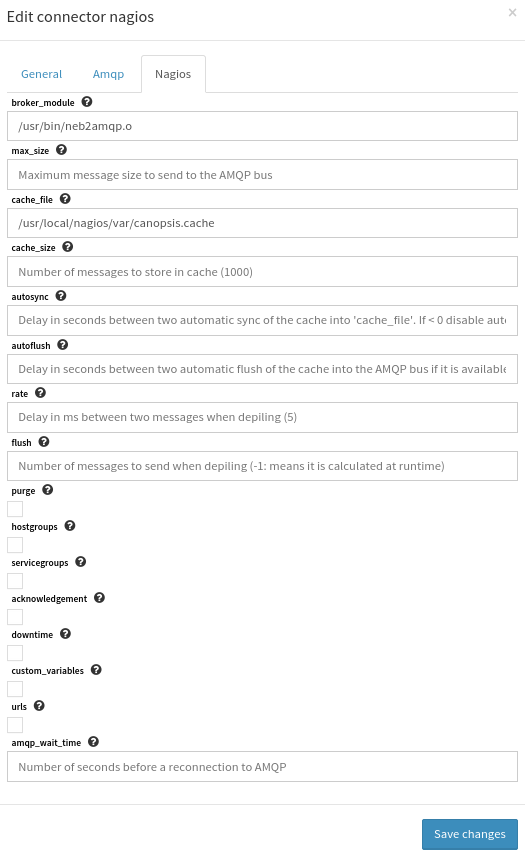
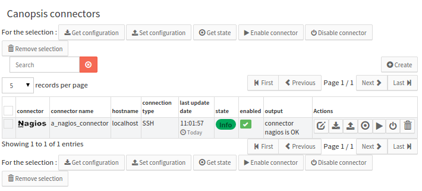
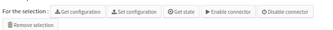

How to use connector interface¶
create/register a connector¶
Click on the create button
A form will display
fill the form accordingly (interactive information are displayed in the form)
A new record is created and available. It is now possible to interact with it if properly connected
Click on edit connector to change custom values for amqp information to tell the connector how to send events to Canopsis, more specifically for the connector Nagios, specials properties that may affect connector generated events.
More information about these options depends on the connector type and is available in the respective connector documentation section. Here we work with the neb2amqp connector.
Please note that depending on the connector type defined when creating a connector, the form and then the configuration changes when editing the connector from the connector inline button (shown below)
Amqp section to fill
Nagios specific informations
Connector created, interaction with remote server¶
Here get state button has been clicked. Actions are asynchronous and require a few moment to be properly ran. Then the refresh button has been clicked and a new state appears and shows last update date for connector intercation and many other information about the state. These information are the connector state below with Major value as in the output the connector system tells the connector parent process is disabled. This means in our case that the nagios instance seems not to be started.
After clicking on the enable button, the remote connector is restarted and returns the new state for the connector. In our case, the connector is OK and the Nagios service restarted properly. The connector is now displayed as OK state. Every action also produces a Canopsis event that will feed Canopsis.
Availables actions on connectors are the follwing¶
- get state: retrieve the connector state from remote server and the parent service state if any.
- get configuration: fetches specific connector information from remote server to the canopsis database to fill properly the configuration form (this action triggers a get state when done).
- set configuration: sends the configuration to the remote connector where it will be used as new configuration information (this action triggers a get state when done).
- enable: activate the connector on remote server to send events to canopsis.
- disable: desactivate the connector event send action remotely.
misceallenous¶
These action can be triggered on many connectors at the same time with muti action buttons.
